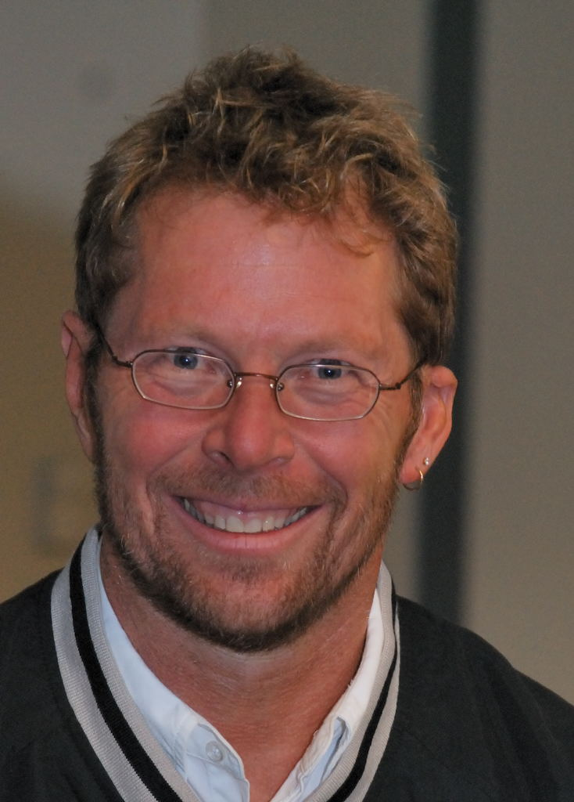

A Tribute page
-by Gurmat Singh Sour

Alistair Cockburn in 2007
Alistair Cockburn
Alistair Cockburn is an American computer scientist, known as one of the initiators of the agile movement in software development. He cosigned (with 17 others) the Manifesto for Agile Software Development.Cockburn started studying the methods of object oriented (OO) software development for IBM. From 1994, he formed "Humans and Technology" in Salt Lake City. He obtained his degree in computer science at the Case Western Reserve University. In 2003 he received his PhD degree from the University of Oslo.